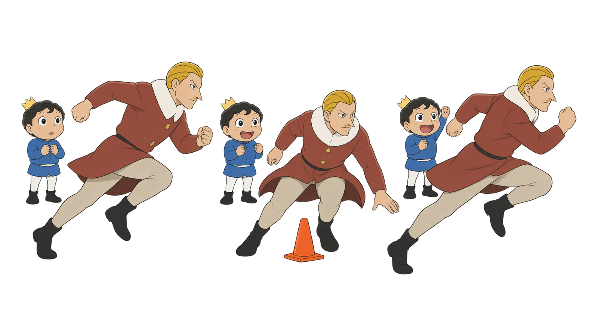
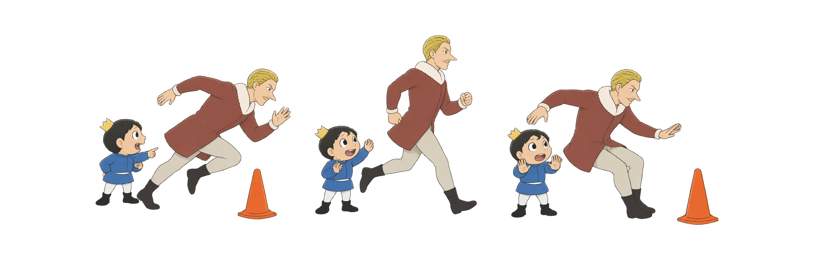
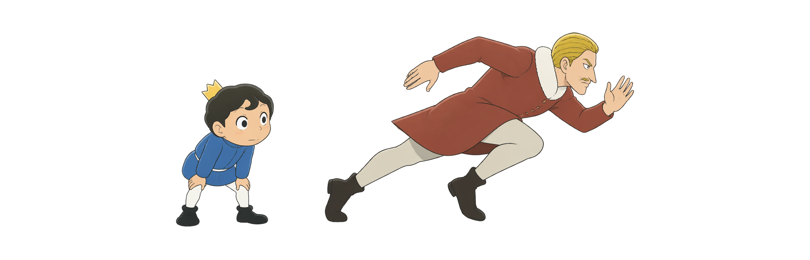
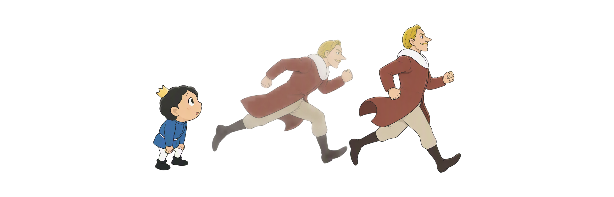
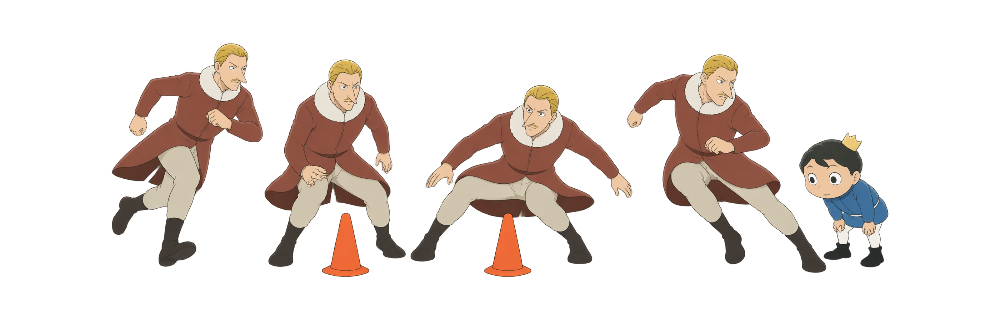
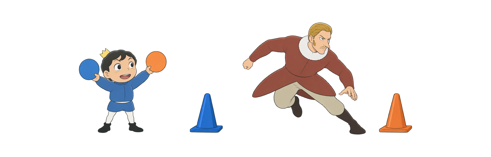
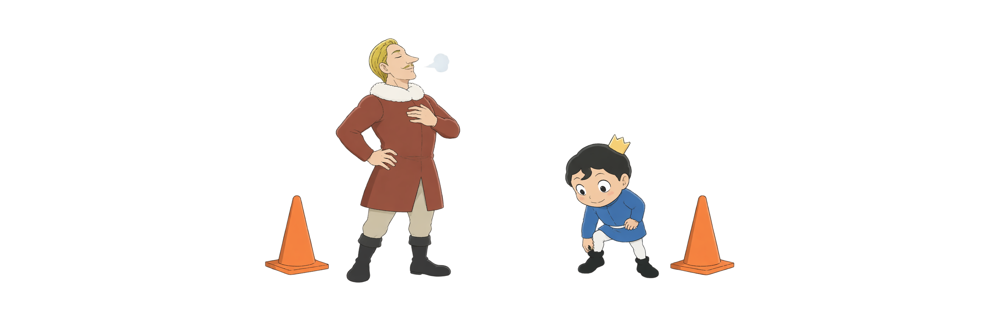

Day 47
SAQ不只是跑得快
先推地 · 再减速 · 后转向 加速 × 敏捷 × 反应
冲刺阶段变向制动反应敏捷

先推地 · 再减速 · 后转向 加速 × 敏捷 × 反应
六个入口把速度拆成可练的阶段；每一次提高难度，都以场地、支撑和恢复为前提。
加速 · 速度 · 减速
自然前倾 · 连续推地
节奏 · 放松 · 稳定
先刹稳 · 再推离
看信号 · 再决定
短距离 · 高质量
图示用于理解跑动与转向关系；疼痛、肿胀、不稳或无法控制减速时先停止并评估。
同一次跑动会从建立速度到减速准备；能认出阶段，才知道该观察什么。

前几步要把地面向后推；自然前倾来自全身排列，不是弯腰扑出去。

速度建立后，节奏、放松和稳定支撑一起工作；有效步幅不是把脚伸得很远。

转向不是猛拧身体；先减速、降低重心，再从稳定支撑推向新方向。

预设路线先练位置；反应信号让你在跑动中做决定，复杂度更高。

少量高质量重复比疲劳中硬堆次数更有价值；把热身、场地和进阶顺序先安排好。
